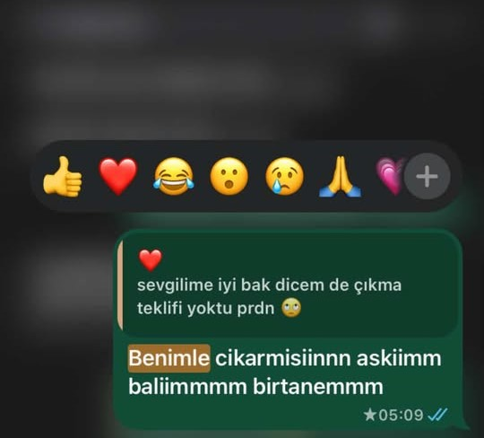

2027'ye Hoş Geldin
Senin için hazırladığım küçük bir yolculuk...
Sürprizi iPhone'unda tam ekran ve uygulama gibi açabilmen için önce ana ekranına eklemen gerekiyor.
Senin için hazırladığım küçük bir yolculuk...
Devam etmek için özel şifreyi gir.

2027'de de her yeni günde yan yana, el ele nice güzel anılarımız olsun.